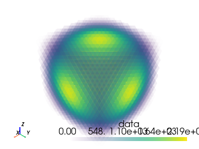

pyvista.DataSet#
- class DataSet(*args, **kwargs)[source]#
Methods in common to spatially referenced objects.
- property active_normals: Optional[pyvista_ndarray]#
Return the active normals as an array.
- Returns:
pyvista_ndarrayActive normals of this dataset.
Notes
If both point and cell normals exist, this returns point normals by default.
Examples
Compute normals on an example sphere mesh and return the active normals for the dataset. Show that this is the same size as the number of points.
>>> import pyvista >>> mesh = pyvista.Sphere() >>> mesh = mesh.compute_normals() >>> normals = mesh.active_normals >>> normals.shape (842, 3) >>> mesh.n_points 842
- property active_scalars_info: ActiveArrayInfo#
Return the active scalar’s association and name.
Association refers to the data association (e.g. point, cell, or field) of the active scalars.
- Returns:
ActiveArrayInfoThe scalars info in an object with namedtuple semantics, with attributes
associationandname.
Notes
If both cell and point scalars are present and neither have been set active within at the dataset level, point scalars will be made active.
Examples
Create a mesh, add scalars to the mesh, and return the active scalars info. Note how when the scalars are added, they automatically become the active scalars.
>>> import pyvista >>> mesh = pyvista.Sphere() >>> mesh['Z Height'] = mesh.points[:, 2] >>> mesh.active_scalars_info ActiveArrayInfoTuple(association=<FieldAssociation.POINT: 0>, name='Z Height')
- property active_scalars_name: str#
Return the name of the active scalars.
Examples
Create a mesh, add scalars to the mesh, and return the name of the active scalars.
>>> import pyvista >>> mesh = pyvista.Sphere() >>> mesh['Z Height'] = mesh.points[:, 2] >>> mesh.active_scalars_name 'Z Height'
- property active_t_coords: Optional[pyvista_ndarray]#
Return or set the active texture coordinates on the points.
Examples
Return the active texture coordinates from the globe example.
>>> from pyvista import examples >>> globe = examples.load_globe() >>> globe.active_t_coords pyvista_ndarray([[0. , 0. ], [0. , 0.07142857], [0. , 0.14285714], ..., [1. , 0.85714286], [1. , 0.92857143], [1. , 1. ]])
- property active_tensors_info: ActiveArrayInfo#
Return the active tensor’s field and name: [field, name].
- property active_vectors: Optional[pyvista_ndarray]#
Return the active vectors array.
Examples
Create a mesh, compute the normals inplace, and return the normals vector array.
>>> import pyvista >>> mesh = pyvista.Sphere() >>> _ = mesh.compute_normals(inplace=True) >>> mesh.active_vectors pyvista_ndarray([[-2.48721432e-10, -1.08815623e-09, -1.00000000e+00], [-2.48721432e-10, -1.08815623e-09, 1.00000000e+00], [-1.18888125e-01, 3.40539310e-03, -9.92901802e-01], ..., [-3.11940581e-01, -6.81432486e-02, 9.47654784e-01], [-2.09880397e-01, -4.65070531e-02, 9.76620376e-01], [-1.15582108e-01, -2.80492082e-02, 9.92901802e-01]], dtype=float32)
- property active_vectors_info: ActiveArrayInfo#
Return the active vector’s association and name.
Association refers to the data association (e.g. point, cell, or field) of the active vectors.
- Returns:
ActiveArrayInfoThe vectors info in an object with namedtuple semantics, with attributes
associationandname.
Notes
If both cell and point vectors are present and neither have been set active within at the dataset level, point vectors will be made active.
Examples
Create a mesh, compute the normals inplace, set the active vectors to the normals, and show that the active vectors are the
'Normals'array associated with points.>>> import pyvista >>> mesh = pyvista.Sphere() >>> _ = mesh.compute_normals(inplace=True) >>> mesh.active_vectors_name = 'Normals' >>> mesh.active_vectors_info ActiveArrayInfoTuple(association=<FieldAssociation.POINT: 0>, name='Normals')
- property active_vectors_name: str#
Return the name of the active vectors array.
Examples
Create a mesh, compute the normals, set them as active, and return the name of the active vectors.
>>> import pyvista >>> mesh = pyvista.Sphere() >>> mesh_w_normals = mesh.compute_normals() >>> mesh_w_normals.active_vectors_name = 'Normals' >>> mesh_w_normals.active_vectors_name 'Normals'
- property area: float#
Return the mesh area if 2D.
This will return 0 for meshes with 3D cells.
- Returns:
floatTotal area of the mesh.
Examples
Get the area of a square of size 2x2. Note 5 points in each direction.
>>> import pyvista as pv >>> mesh = pv.UniformGrid(dimensions=(5, 5, 1)) >>> mesh.area 16.0
A mesh with 3D cells does not have an area. To get the outer surface area, first extract the surface using
pyvista.DataSetFilters.extract_surface().>>> mesh = pv.UniformGrid(dimensions=(5, 5, 5)) >>> mesh.area 0.0
Get the area of a sphere.
>>> mesh = pv.Sphere() >>> mesh.volume 0.51825
- property array_names: List[str]#
Return a list of array names for the dataset.
This makes sure to put the active scalars’ name first in the list.
Examples
Return the array names for a mesh.
>>> import pyvista >>> mesh = pyvista.Sphere() >>> mesh.point_data['my_array'] = range(mesh.n_points) >>> mesh.array_names ['my_array', 'Normals']
- property arrows: Optional[PolyData]#
Return a glyph representation of the active vector data as arrows.
Arrows will be located at the points of the mesh and their size will be dependent on the norm of the vector. Their direction will be the “direction” of the vector
- Returns:
pyvista.PolyDataActive vectors represented as arrows.
Examples
Create a mesh, compute the normals and set them active, and plot the active vectors.
>>> import pyvista >>> mesh = pyvista.Cube() >>> mesh_w_normals = mesh.compute_normals() >>> mesh_w_normals.active_vectors_name = 'Normals' >>> arrows = mesh_w_normals.arrows >>> arrows.plot(show_scalar_bar=False)
- property bounds: Tuple[float, float, float, float, float, float]#
Return the bounding box of this dataset.
The form is:
(xmin, xmax, ymin, ymax, zmin, zmax).Examples
Create a cube and return the bounds of the mesh.
>>> import pyvista >>> cube = pyvista.Cube() >>> cube.bounds (-0.5, 0.5, -0.5, 0.5, -0.5, 0.5)
- cast_to_pointset(deep: bool = False) PointSet[source]#
Get a new representation of this object as a
pyvista.PointSet.- Parameters:
- deepbool,
optional When
Truemakes a full copy of the object. WhenFalse, performs a shallow copy where the points and data arrays are references to the original object.
- deepbool,
- Returns:
pyvista.PointSetDataset cast into a
pyvista.PointSet.
Examples
>>> import pyvista >>> mesh = pyvista.Sphere() >>> pointset = mesh.cast_to_pointset() >>> type(pointset) <class 'pyvista.core.pointset.PointSet'>
- cast_to_unstructured_grid() UnstructuredGrid[source]#
Get a new representation of this object as a
pyvista.UnstructuredGrid.- Returns:
pyvista.UnstructuredGridDataset cast into a
pyvista.UnstructuredGrid.
Examples
Cast a
pyvista.PolyDatato apyvista.UnstructuredGrid.>>> import pyvista >>> mesh = pyvista.Sphere() >>> type(mesh) <class 'pyvista.core.pointset.PolyData'> >>> grid = mesh.cast_to_unstructured_grid() >>> type(grid) <class 'pyvista.core.pointset.UnstructuredGrid'>
- property cell_arrays: DataSetAttributes#
Return vtkCellData as DataSetAttributes.
Deprecated since version 0.32.0: Use
DataSet.cell_datato return cell data.
- cell_bounds(ind: int) Tuple[float, float, float, float, float, float][source]#
Return the bounding box of a cell.
- Parameters:
- ind
int Cell ID.
- ind
- Returns:
Examples
>>> from pyvista import examples >>> mesh = examples.load_airplane() >>> mesh.cell_bounds(0) (896.9940185546875, 907.5390014648438, 48.760101318359375, 55.49020004272461, 80.74520111083984, 83.65809631347656)
- property cell_data: DataSetAttributes#
Return vtkCellData as DataSetAttributes.
Examples
Add cell arrays to a mesh and list the available
cell_data.>>> import pyvista >>> import numpy as np >>> mesh = pyvista.Cube() >>> mesh.clear_data() >>> mesh.cell_data['my_array'] = np.random.random(mesh.n_cells) >>> mesh.cell_data['my_other_array'] = np.arange(mesh.n_cells) >>> mesh.cell_data pyvista DataSetAttributes Association : CELL Active Scalars : my_other_array Active Vectors : None Active Texture : None Active Normals : None Contains arrays : my_array float64 (6,) my_other_array int64 (6,) SCALARS
Access an array from
cell_data.>>> mesh.cell_data['my_other_array'] pyvista_ndarray([0, 1, 2, 3, 4, 5])
Or access it directly from the mesh.
>>> mesh['my_array'].shape (6,)
- cell_n_points(ind: int) int[source]#
Return the number of points in a cell.
Examples
>>> from pyvista import examples >>> mesh = examples.load_airplane() >>> mesh.cell_n_points(0) 3
- cell_point_ids(ind: int) List[int][source]#
Return the point ids in a cell.
Examples
>>> from pyvista import examples >>> mesh = examples.load_airplane() >>> mesh.cell_type(0) 5
Cell type 5 is a triangular cell with three points.
>>> mesh.cell_point_ids(0) [0, 1, 2]
- cell_points(ind: int) ndarray[source]#
Return the points in a cell.
- Parameters:
- ind
int Cell ID.
- ind
- Returns:
numpy.ndarrayAn array of floats with shape (number of points, 3) containing the coordinates of the cell corners.
Examples
>>> from pyvista import examples >>> mesh = examples.load_airplane() >>> mesh.cell_points(0) [[896.99401855 48.76010132 82.26560211] [906.59301758 48.76010132 80.74520111] [907.53900146 55.49020004 83.65809631]]
- cell_type(ind: int) int[source]#
Return the type of a cell.
- Parameters:
- ind
int Cell type ID.
- ind
- Returns:
intVTK cell type. See vtkCellType.h .
Examples
>>> from pyvista import examples >>> mesh = examples.load_airplane() >>> mesh.cell_type(0) 5
- property center: Union[List[float], Tuple[float, float, float], ndarray]#
Return the center of the bounding box.
Examples
Get the center of a mesh.
>>> import pyvista >>> mesh = pyvista.Sphere(center=(1, 2, 0)) >>> mesh.center [1.0, 2.0, 0.0]
- clear_arrays()[source]#
Remove all arrays from point/cell/field data.
Deprecated since version 0.32.0: Use
DataSet.clear_data()instead.
- clear_cell_arrays()[source]#
Remove all cell data.
Deprecated since version 0.32.0: Use
DataSet.clear_cell_data()instead.
- clear_data()[source]#
Remove all arrays from point/cell/field data.
Examples
Clear all arrays from a mesh.
>>> import pyvista >>> import numpy as np >>> mesh = pyvista.Sphere() >>> mesh.point_data.keys() ['Normals'] >>> mesh.clear_data() >>> mesh.point_data.keys() []
- clear_point_arrays()[source]#
Remove all point data.
Deprecated since version 0.32.0: Use
DataSet.clear_point_data()instead.
- clear_point_data()[source]#
Remove all point arrays.
Examples
Clear all point arrays from a mesh.
>>> import pyvista >>> import numpy as np >>> mesh = pyvista.Sphere() >>> mesh.point_data.keys() ['Normals'] >>> mesh.clear_point_data() >>> mesh.point_data.keys() []
- clear_textures()[source]#
Clear the textures from this mesh.
Examples
Clear the texture from the globe example.
>>> from pyvista import examples >>> globe = examples.load_globe() >>> globe.textures {'2k_earth_daymap': ...} >>> globe.clear_textures() >>> globe.textures {}
- copy_from(mesh: vtkDataSet)[source]#
Overwrite this dataset inplace with the new dataset’s geometries and data.
- Parameters:
- mesh
vtk.vtkDataSet The overwriting mesh.
- mesh
Examples
Create two meshes and overwrite
mesh_awithmesh_b. Show thatmesh_ais equal tomesh_b.>>> import pyvista >>> mesh_a = pyvista.Sphere() >>> mesh_b = pyvista.Cube() >>> mesh_a.copy_from(mesh_b) >>> mesh_a == mesh_b True
- copy_meta_from(ido: DataSet, deep: bool = True)[source]#
Copy pyvista meta data onto this object from another object.
- Parameters:
- ido
pyvista.DataSet Dataset to copy the metadata from.
- deepbool,
optional Deep or shallow copy.
- ido
- find_cells_along_line(pointa: Iterable[float], pointb: Iterable[float], tolerance=0.0) ndarray[source]#
Find the index of cells in this mesh along a line.
Line is defined from
pointatopointb.- Parameters:
- Returns:
numpy.ndarrayIndex or indices of the cell in this mesh that are closest to the given point.
See also
Examples
>>> import pyvista >>> mesh = pyvista.Sphere() >>> index = mesh.find_cells_along_line([0, 0, 0], [0, 0, 1.0])
- find_cells_within_bounds(bounds: Iterable[float]) ndarray[source]#
Find the index of cells in this mesh within bounds.
- Parameters:
- Returns:
numpy.ndarrayIndex or indices of the cell in this mesh that are closest to the given point.
See also
Examples
>>> import pyvista >>> mesh = pyvista.Cube() >>> index = mesh.find_cells_within_bounds([-2.0, 2.0, -2.0, 2.0, -2.0, 2.0])
- find_closest_cell(point: Union[ndarray, Sequence[Union[List[float], Tuple[float, float, float], ndarray]], Sequence[Union[float, int, number]]], return_closest_point: bool = False) Union[int, ndarray, Tuple[Union[int, ndarray], ndarray]][source]#
Find index of closest cell in this mesh to the given point.
- Parameters:
- point
Sequence(float)ornp.ndarray Coordinates of point to query (length 3) or a
numpyarray ofnpoints with shape(n, 3).- return_closest_pointbool,
optional If
True, the closest point within a mesh cell to that point is returned. This is not necessarily the closest nodal point on the mesh. Default isFalse.
- point
- Returns:
intornumpy.ndarrayIndex or indices of the cell in this mesh that is/are closest to the given point(s).
Changed in version 0.35.0: Inputs of shape
(1, 3)now return anumpy.ndarrayof shape(1,).numpy.ndarrayPoint or points inside a cell of the mesh that is/are closest to the given point(s). Only returned if
return_closest_point=True.Changed in version 0.35.0: Inputs of shape
(1, 3)now return anumpy.ndarrayof the same shape.
Warning
This method may still return a valid cell index even if the point contains a value like
numpy.infornumpy.nan.See also
Examples
Find nearest cell on a sphere centered on the origin to the point
[0.1, 0.2, 0.3].>>> import pyvista >>> mesh = pyvista.Sphere() >>> point = [0.1, 0.2, 0.3] >>> index = mesh.find_closest_cell(point) >>> index 591
Make sure that this cell indeed is the closest to
[0.1, 0.2, 0.3].>>> import numpy as np >>> cell_centers = mesh.cell_centers() >>> relative_position = cell_centers.points - point >>> distance = np.linalg.norm(relative_position, axis=1) >>> np.argmin(distance) 591
Find the nearest cells to several random points that are centered on the origin.
>>> points = 2 * np.random.random((5000, 3)) - 1 >>> indices = mesh.find_closest_cell(points) >>> indices.shape (5000,)
For the closest cell, find the point inside the cell that is closest to the supplied point. The rectangle is a unit square with 1 cell and 4 nodal points at the corners in the plane with
znormal andz=0. The closest point inside the cell is not usually at a nodal point.>>> unit_square = pyvista.Rectangle() >>> index, closest_point = unit_square.find_closest_cell( ... [0.25, 0.25, 0.5], ... return_closest_point=True ... ) >>> closest_point array([0.25, 0.25, 0. ])
But, the closest point can be a nodal point, although the index of that point is not returned. If the closest nodal point by index is desired, see
DataSet.find_closest_point().>>> index, closest_point = unit_square.find_closest_cell( ... [1.0, 1.0, 0.5], ... return_closest_point=True ... ) >>> closest_point array([1., 1., 0.])
- find_closest_point(point: Iterable[float], n=1) int[source]#
Find index of closest point in this mesh to the given point.
If wanting to query many points, use a KDTree with scipy or another library as those implementations will be easier to work with.
See: pyvista/pyvista-support#107
- Parameters:
- Returns:
intThe index of the point in this mesh that is closest to the given point.
See also
Examples
Find the index of the closest point to
(0, 1, 0).>>> import pyvista >>> mesh = pyvista.Sphere() >>> index = mesh.find_closest_point((0, 1, 0)) >>> index 212
Get the coordinate of that point.
>>> mesh.points[index] pyvista_ndarray([-0.05218758, 0.49653167, 0.02706946], dtype=float32)
- find_containing_cell(point: Union[ndarray, Sequence[Union[List[float], Tuple[float, float, float], ndarray]], Sequence[Union[float, int, number]]]) Union[int, ndarray][source]#
Find index of a cell that contains the given point.
- Parameters:
- point
Sequence(float)ornp.ndarray Coordinates of point to query (length 3) or a
numpyarray ofnpoints with shape(n, 3).
- point
- Returns:
intornumpy.ndarrayIndex or indices of the cell in this mesh that contains the given point.
Changed in version 0.35.0: Inputs of shape
(1, 3)now return anumpy.ndarrayof shape(1,).
See also
Examples
A unit square with 16 equal sized cells is created and a cell containing the point
[0.3, 0.3, 0.0]is found.>>> import pyvista >>> mesh = pyvista.UniformGrid(dimensions=[5, 5, 1], spacing=[1/4, 1/4, 0]) >>> mesh UniformGrid... >>> mesh.find_containing_cell([0.3, 0.3, 0.0]) 5
A point outside the mesh domain will return
-1.>>> mesh.find_containing_cell([0.3, 0.3, 1.0]) -1
Find the cells that contain 1000 random points inside the mesh.
>>> import numpy as np >>> points = np.random.random((1000, 3)) >>> indices = mesh.find_containing_cell(points) >>> indices.shape (1000,)
- flip_normal(normal: List[float], point=None, transform_all_input_vectors=False, inplace=False)[source]#
Flip mesh about the normal.
Note
See also the notes at
transform()which is used by this filter under the hood.- Parameters:
- normal
tuple Normal vector to flip about.
- point
list,optional Point to rotate about. Defaults to center of mesh at
center.- transform_all_input_vectorsbool,
optional When
True, all input vectors are transformed. Otherwise, only the points, normals and active vectors are transformed.- inplacebool,
optional Updates mesh in-place.
- normal
- Returns:
pyvista.DataSetDataset flipped about its normal.
Examples
>>> import pyvista >>> from pyvista import examples >>> pl = pyvista.Plotter(shape=(1, 2)) >>> pl.subplot(0, 0) >>> pl.show_axes() >>> mesh1 = examples.download_teapot() >>> _ = pl.add_mesh(mesh1) >>> pl.subplot(0, 1) >>> pl.show_axes() >>> mesh2 = mesh1.flip_normal([1.0, 1.0, 1.0], inplace=False) >>> _ = pl.add_mesh(mesh2) >>> pl.show(cpos="xy")
- flip_x(point=None, transform_all_input_vectors=False, inplace=False)[source]#
Flip mesh about the x-axis.
Note
See also the notes at
transform()which is used by this filter under the hood.- Parameters:
- Returns:
pyvista.DataSetFlipped dataset.
Examples
>>> import pyvista >>> from pyvista import examples >>> pl = pyvista.Plotter(shape=(1, 2)) >>> pl.subplot(0, 0) >>> pl.show_axes() >>> mesh1 = examples.download_teapot() >>> _ = pl.add_mesh(mesh1) >>> pl.subplot(0, 1) >>> pl.show_axes() >>> mesh2 = mesh1.flip_x(inplace=False) >>> _ = pl.add_mesh(mesh2) >>> pl.show(cpos="xy")
- flip_y(point=None, transform_all_input_vectors=False, inplace=False)[source]#
Flip mesh about the y-axis.
Note
See also the notes at
transform()which is used by this filter under the hood.- Parameters:
- Returns:
pyvista.DataSetFlipped dataset.
Examples
>>> import pyvista >>> from pyvista import examples >>> pl = pyvista.Plotter(shape=(1, 2)) >>> pl.subplot(0, 0) >>> pl.show_axes() >>> mesh1 = examples.download_teapot() >>> _ = pl.add_mesh(mesh1) >>> pl.subplot(0, 1) >>> pl.show_axes() >>> mesh2 = mesh1.flip_y(inplace=False) >>> _ = pl.add_mesh(mesh2) >>> pl.show(cpos="xy")
- flip_z(point=None, transform_all_input_vectors=False, inplace=False)[source]#
Flip mesh about the z-axis.
Note
See also the notes at
transform()which is used by this filter under the hood.- Parameters:
- Returns:
pyvista.DataSetFlipped dataset.
Examples
>>> import pyvista >>> from pyvista import examples >>> pl = pyvista.Plotter(shape=(1, 2)) >>> pl.subplot(0, 0) >>> pl.show_axes() >>> mesh1 = examples.download_teapot().rotate_x(90, inplace=False) >>> _ = pl.add_mesh(mesh1) >>> pl.subplot(0, 1) >>> pl.show_axes() >>> mesh2 = mesh1.flip_z(inplace=False) >>> _ = pl.add_mesh(mesh2) >>> pl.show(cpos="xz")
- get_array(name: str, preference: Literal['cell', 'point', 'field'] = 'cell') pyvista_ndarray[source]#
Search both point, cell and field data for an array.
- Parameters:
- Returns:
pyvista.pyvista_ndarrayRequested array.
Examples
Create a DataSet with a variety of arrays.
>>> import pyvista >>> mesh = pyvista.Cube() >>> mesh.clear_data() >>> mesh.point_data['point-data'] = range(mesh.n_points) >>> mesh.cell_data['cell-data'] = range(mesh.n_cells) >>> mesh.field_data['field-data'] = ['a', 'b', 'c'] >>> mesh.array_names ['point-data', 'field-data', 'cell-data']
Get the point data array.
>>> mesh.get_array('point-data') pyvista_ndarray([0, 1, 2, 3, 4, 5, 6, 7])
Get the cell data array.
>>> mesh.get_array('cell-data') pyvista_ndarray([0, 1, 2, 3, 4, 5])
Get the field data array.
>>> mesh.get_array('field-data') pyvista_ndarray(['a', 'b', 'c'], dtype='<U1')
- get_array_association(name: str, preference: Literal['cell', 'point', 'field'] = 'cell') FieldAssociation[source]#
Get the association of an array.
- Parameters:
- Returns:
pyvista.FieldAssociationField association of the array.
Examples
Create a DataSet with a variety of arrays.
>>> import pyvista >>> mesh = pyvista.Cube() >>> mesh.clear_data() >>> mesh.point_data['point-data'] = range(mesh.n_points) >>> mesh.cell_data['cell-data'] = range(mesh.n_cells) >>> mesh.field_data['field-data'] = ['a', 'b', 'c'] >>> mesh.array_names ['point-data', 'field-data', 'cell-data']
Get the point data array association.
>>> mesh.get_array_association('point-data') <FieldAssociation.POINT: 0>
Get the cell data array association.
>>> mesh.get_array_association('cell-data') <FieldAssociation.CELL: 1>
Get the field data array association.
>>> mesh.get_array_association('field-data') <FieldAssociation.NONE: 2>
- get_data_range(arr_var: Optional[Union[str, ndarray]] = None, preference='cell') Tuple[Union[float, ndarray], Union[float, ndarray]][source]#
Get the non-NaN min and max of a named array.
- Parameters:
- arr_var
str,np.ndarray,optional The name of the array to get the range. If
None, the active scalars is used.- preference
str,optional When scalars is specified, this is the preferred array type to search for in the dataset. Must be either
'point','cell', or'field'.
- arr_var
- Returns:
tuple(min, max)of the named array.
- property length: float#
Return the length of the diagonal of the bounding box.
Examples
Get the length of the bounding box of a cube. This should match
3**(1/2)since it is the diagonal of a cube that is1 x 1 x 1.>>> import pyvista >>> mesh = pyvista.Cube() >>> mesh.length 1.7320508075688772
- property n_cells: int#
Return the number of cells in the entire dataset.
Notes
This is identical to
n_facesinpyvista.PolyData.Examples
Create a mesh and return the number of cells in the mesh.
>>> import pyvista >>> cube = pyvista.Cube() >>> cube.n_cells 6
- property n_points: int#
Return the number of points in the entire dataset.
Examples
Create a mesh and return the number of points in the mesh.
>>> import pyvista >>> cube = pyvista.Cube() >>> cube.n_points 8
- overwrite(mesh: vtkDataSet)[source]#
Overwrite this dataset inplace with the new dataset’s geometries and data.
Deprecated since version 0.37.0: Use
DataSet.copy_from()instead.- Parameters:
- mesh
vtk.vtkDataSet The overwriting mesh.
- mesh
- plot(off_screen=None, full_screen=None, screenshot=None, interactive=True, cpos=None, window_size=None, show_bounds=False, show_axes=None, notebook=None, background=None, text='', return_img=False, eye_dome_lighting=False, volume=False, parallel_projection=False, use_ipyvtk=None, jupyter_backend=None, return_viewer=False, return_cpos=False, jupyter_kwargs=None, theme=None, hidden_line_removal=None, anti_aliasing=None, zoom=None, border=None, border_color='k', border_width=2.0, ssao=False, **kwargs)#
Plot a PyVista, numpy, or vtk object.
- Parameters:
- var_item
pyvista.DataSet,vtk,ornumpyobject PyVista, VTK, or
numpyobject to be plotted.- off_screenbool,
optional Plots off screen when
True. Helpful for saving screenshots without a window popping up. Defaults to the global settingpyvista.OFF_SCREEN.- full_screenbool,
optional Opens window in full screen. When enabled, ignores
window_size. Defaults to active theme setting inpyvista.global_theme.full_screen.- screenshot
stror bool,optional Saves screenshot to file when enabled. See:
Plotter.screenshot(). DefaultFalse.When
True, takes screenshot and returnsnumpyarray of image.- interactivebool,
optional Allows user to pan and move figure. Defaults to
pyvista.global_theme.interactive.- cpos
list,optional List of camera position, focal point, and view up.
- window_size
list,optional Window size in pixels. Defaults to global theme
pyvista.global_theme.window_size.- show_boundsbool,
optional Shows mesh bounds when
True. DefaultFalse.- show_axesbool,
optional Shows a vtk axes widget. If
None, enabled according topyvista.global_theme.axes.show.- notebookbool,
optional When
True, the resulting plot is placed inline a jupyter notebook. Assumes a jupyter console is active.- background
color_like,optional Color of the background.
- text
str,optional Adds text at the bottom of the plot.
- return_imgbool,
optional Returns numpy array of the last image rendered.
- eye_dome_lightingbool,
optional Enables eye dome lighting.
- volumebool,
optional Use the
Plotter.add_volume()method for volume rendering.- parallel_projectionbool,
optional Enable parallel projection.
- use_ipyvtkbool,
optional Deprecated. Instead, set the backend either globally with
pyvista.set_jupyter_backend('ipyvtklink')or withbackend='ipyvtklink'.- jupyter_backend
str,optional Jupyter notebook plotting backend to use. One of the following:
'none': Do not display in the notebook.'static': Display a static figure.'ipygany': Show aipyganywidget'panel': Show apanelwidget.
This can also be set globally with
pyvista.set_jupyter_backend().- return_viewerbool,
optional Return the jupyterlab viewer, scene, or display object when plotting with jupyter notebook.
- return_cposbool,
optional Return the last camera position from the render window when enabled. Defaults to value in theme settings.
- jupyter_kwargs
dict,optional Keyword arguments for the Jupyter notebook plotting backend.
- theme
pyvista.themes.DefaultTheme,optional Plot-specific theme.
- hidden_line_removalbool,
optional Wireframe geometry will be drawn using hidden line removal if the rendering engine supports it. See
Plotter.enable_hidden_line_removal. Defaults to the theme settingpyvista.global_theme.hidden_line_removal.- anti_aliasingbool,
optional Enable or disable anti-aliasing. Defaults to the theme setting
pyvista.global_theme.anti_aliasing.- zoom
float,str,optional Camera zoom. Either
'tight'or a float. A value greater than 1 is a zoom-in, a value less than 1 is a zoom-out. Must be greater than 0.- borderbool,
optional Draw a border around each render window. Default
False.- border_color
color_like,optional Either a string, rgb list, or hex color string. For example:
color='white'color='w'color=[1.0, 1.0, 1.0]color='#FFFFFF'
- border_width
float,optional Width of the border in pixels when enabled.
- ssaobool,
optional Enable surface space ambient occlusion (SSAO). See
Plotter.enable_ssao()for more details.- **kwargs
optionalkeywordarguments See
pyvista.Plotter.add_mesh()for additional options.
- var_item
- Returns:
- cpos
list List of camera position, focal point, and view up. Returned only when
return_cpos=Trueor set in the default global or plot theme. Not returned when in a jupyter notebook andreturn_viewer=True.- image
np.ndarray Numpy array of the last image when either
return_img=Trueorscreenshot=Trueis set. Not returned when in a jupyter notebook withreturn_viewer=True. Optionally contains alpha values. Sized:[Window height x Window width x 3] if the theme sets
transparent_background=False.[Window height x Window width x 4] if the theme sets
transparent_background=True.
widgetIPython widget when
return_viewer=True.
- cpos
Examples
Plot a simple sphere while showing its edges.
>>> import pyvista as pv >>> mesh = pv.Sphere() >>> mesh.plot(show_edges=True)

Plot a volume mesh. Color by distance from the center of the UniformGrid. Note
volume=Trueis passed.>>> import numpy as np >>> grid = pv.UniformGrid(dimensions=(32, 32, 32), spacing=(0.5, 0.5, 0.5)) >>> grid['data'] = np.linalg.norm(grid.center - grid.points, axis=1) >>> grid['data'] = np.abs(grid['data'] - grid['data'].max())**3 >>> grid.plot(volume=True)

- property point_arrays: DataSetAttributes#
Return vtkPointData as DataSetAttributes.
Deprecated since version 0.32.0: Use
DataSet.point_datato return point data.
- property point_data: DataSetAttributes#
Return vtkPointData as DataSetAttributes.
Examples
Add point arrays to a mesh and list the available
point_data.>>> import pyvista >>> import numpy as np >>> mesh = pyvista.Cube() >>> mesh.clear_data() >>> mesh.point_data['my_array'] = np.random.random(mesh.n_points) >>> mesh.point_data['my_other_array'] = np.arange(mesh.n_points) >>> mesh.point_data pyvista DataSetAttributes Association : POINT Active Scalars : my_other_array Active Vectors : None Active Texture : None Active Normals : None Contains arrays : my_array float64 (8,) my_other_array int64 (8,) SCALARS
Access an array from
point_data.>>> mesh.point_data['my_other_array'] pyvista_ndarray([0, 1, 2, 3, 4, 5, 6, 7])
Or access it directly from the mesh.
>>> mesh['my_array'].shape (8,)
- point_is_inside_cell(ind: int, point: Union[ndarray, Sequence[Union[List[float], Tuple[float, float, float], ndarray]], Sequence[Union[float, int, number]]]) Union[int, ndarray][source]#
Return whether one or more points are inside a cell.
New in version 0.35.0.
- Parameters:
- ind
int Cell ID.
- point
Sequence[float]ornp.ndarray Coordinates of point to query (length 3) or a
numpyarray ofnpoints with shape(n, 3).
- ind
- Returns:
- bool or
numpy.ndarray Whether point(s) is/are inside cell. A scalar bool is only returned if the input point has shape
(3,).
- bool or
Examples
>>> from pyvista import examples >>> mesh = examples.load_hexbeam() >>> mesh.cell_bounds(0) (0.0, 0.5, 0.0, 0.5, 0.0, 0.5) >>> mesh.point_is_inside_cell(0, [0.2, 0.2, 0.2]) True
- property points: pyvista_ndarray#
Return a reference to the points as a numpy object.
Examples
Create a mesh and return the points of the mesh as a numpy array.
>>> import pyvista >>> cube = pyvista.Cube() >>> points = cube.points >>> points pyvista_ndarray([[-0.5, -0.5, -0.5], [-0.5, -0.5, 0.5], [-0.5, 0.5, 0.5], [-0.5, 0.5, -0.5], [ 0.5, -0.5, -0.5], [ 0.5, 0.5, -0.5], [ 0.5, 0.5, 0.5], [ 0.5, -0.5, 0.5]], dtype=float32)
Shift these points in the z direction and show that their position is reflected in the mesh points.
>>> points[:, 2] += 1 >>> cube.points pyvista_ndarray([[-0.5, -0.5, 0.5], [-0.5, -0.5, 1.5], [-0.5, 0.5, 1.5], [-0.5, 0.5, 0.5], [ 0.5, -0.5, 0.5], [ 0.5, 0.5, 0.5], [ 0.5, 0.5, 1.5], [ 0.5, -0.5, 1.5]], dtype=float32)
You can also update the points in-place:
>>> cube.points[...] = 2*points >>> cube.points pyvista_ndarray([[-1., -1., 1.], [-1., -1., 3.], [-1., 1., 3.], [-1., 1., 1.], [ 1., -1., 1.], [ 1., 1., 1.], [ 1., 1., 3.], [ 1., -1., 3.]], dtype=float32)
- rename_array(old_name: str, new_name: str, preference='cell')[source]#
Change array name by searching for the array then renaming it.
- Parameters:
Examples
Create a cube, assign a point array to the mesh named
'my_array', and rename it to'my_renamed_array'.>>> import pyvista >>> import numpy as np >>> cube = pyvista.Cube() >>> cube['my_array'] = range(cube.n_points) >>> cube.rename_array('my_array', 'my_renamed_array') >>> cube['my_renamed_array'] pyvista_ndarray([0, 1, 2, 3, 4, 5, 6, 7])
- rotate_vector(vector: Iterable[float], angle: float, point=(0.0, 0.0, 0.0), transform_all_input_vectors=False, inplace=False)[source]#
Rotate mesh about a vector.
Note
See also the notes at
transform()which is used by this filter under the hood.- Parameters:
- vector
Iterable Axes to rotate about.
- angle
float Angle in degrees to rotate about the vector.
- point
list,optional Point to rotate about. Defaults to origin
(0.0, 0.0, 0.0).- transform_all_input_vectorsbool,
optional When
True, all input vectors are transformed. Otherwise, only the points, normals and active vectors are transformed.- inplacebool,
optional Updates mesh in-place.
- vector
- Returns:
pyvista.DataSetRotated dataset.
Examples
Rotate a mesh 30 degrees about the
(1, 1, 1)axis.>>> import pyvista >>> mesh = pyvista.Cube() >>> rot = mesh.rotate_vector((1, 1, 1), 30, inplace=False)
Plot the rotated mesh.
>>> pl = pyvista.Plotter() >>> _ = pl.add_mesh(rot) >>> _ = pl.add_mesh(mesh, style='wireframe', line_width=3) >>> _ = pl.add_axes_at_origin() >>> pl.show()
- rotate_x(angle: float, point=(0.0, 0.0, 0.0), transform_all_input_vectors=False, inplace=False)[source]#
Rotate mesh about the x-axis.
Note
See also the notes at
transform()which is used by this filter under the hood.- Parameters:
- angle
float Angle in degrees to rotate about the x-axis.
- point
list,optional Point to rotate about. Defaults to origin
(0.0, 0.0, 0.0).- transform_all_input_vectorsbool,
optional When
True, all input vectors are transformed. Otherwise, only the points, normals and active vectors are transformed.- inplacebool,
optional Updates mesh in-place.
- angle
- Returns:
pyvista.DataSetRotated dataset.
Examples
Rotate a mesh 30 degrees about the x-axis.
>>> import pyvista >>> mesh = pyvista.Cube() >>> rot = mesh.rotate_x(30, inplace=False)
Plot the rotated mesh.
>>> pl = pyvista.Plotter() >>> _ = pl.add_mesh(rot) >>> _ = pl.add_mesh(mesh, style='wireframe', line_width=3) >>> _ = pl.add_axes_at_origin() >>> pl.show()

- rotate_y(angle: float, point=(0.0, 0.0, 0.0), transform_all_input_vectors=False, inplace=False)[source]#
Rotate mesh about the y-axis.
Note
See also the notes at
transform()which is used by this filter under the hood.- Parameters:
- angle
float Angle in degrees to rotate about the y-axis.
- point
float,optional Point to rotate about.
- transform_all_input_vectorsbool,
optional When
True, all input vectors are transformed. Otherwise, only the points, normals and active vectors are transformed.- inplacebool,
optional Updates mesh in-place.
- angle
- Returns:
pyvista.DataSetRotated dataset.
Examples
Rotate a cube 30 degrees about the y-axis.
>>> import pyvista >>> mesh = pyvista.Cube() >>> rot = mesh.rotate_y(30, inplace=False)
Plot the rotated mesh.
>>> pl = pyvista.Plotter() >>> _ = pl.add_mesh(rot) >>> _ = pl.add_mesh(mesh, style='wireframe', line_width=3) >>> _ = pl.add_axes_at_origin() >>> pl.show()
- rotate_z(angle: float, point=(0.0, 0.0, 0.0), transform_all_input_vectors=False, inplace=False)[source]#
Rotate mesh about the z-axis.
Note
See also the notes at
transform()which is used by this filter under the hood.- Parameters:
- angle
float Angle in degrees to rotate about the z-axis.
- point
list,optional Point to rotate about. Defaults to origin
(0.0, 0.0, 0.0).- transform_all_input_vectorsbool,
optional When
True, all input vectors are transformed. Otherwise, only the points, normals and active vectors are transformed.- inplacebool,
optional Updates mesh in-place.
- angle
- Returns:
pyvista.DataSetRotated dataset.
Examples
Rotate a mesh 30 degrees about the z-axis.
>>> import pyvista >>> mesh = pyvista.Cube() >>> rot = mesh.rotate_z(30, inplace=False)
Plot the rotated mesh.
>>> pl = pyvista.Plotter() >>> _ = pl.add_mesh(rot) >>> _ = pl.add_mesh(mesh, style='wireframe', line_width=3) >>> _ = pl.add_axes_at_origin() >>> pl.show()
- scale(xyz: Union[float, int, number, list, tuple, ndarray], transform_all_input_vectors=False, inplace=False)[source]#
Scale the mesh.
Note
See also the notes at
transform()which is used by this filter under the hood.- Parameters:
- xyz
floatorlistortupleornp.ndarray A scalar or length 3 list, tuple or array defining the scale factors along x, y, and z. If a scalar, the same uniform scale is used along all three axes.
- transform_all_input_vectorsbool,
optional When
True, all input vectors are transformed. Otherwise, only the points, normals and active vectors are transformed.- inplacebool,
optional Updates mesh in-place.
- xyz
- Returns:
pyvista.DataSetScaled dataset.
Examples
>>> import pyvista >>> from pyvista import examples >>> pl = pyvista.Plotter(shape=(1, 2)) >>> pl.subplot(0, 0) >>> pl.show_axes() >>> _ = pl.show_grid() >>> mesh1 = examples.download_teapot() >>> _ = pl.add_mesh(mesh1) >>> pl.subplot(0, 1) >>> pl.show_axes() >>> _ = pl.show_grid() >>> mesh2 = mesh1.scale([10.0, 10.0, 10.0], inplace=False) >>> _ = pl.add_mesh(mesh2) >>> pl.show(cpos="xy")
- set_active_scalars(name: Optional[str], preference='cell')[source]#
Find the scalars by name and appropriately sets it as active.
To deactivate any active scalars, pass
Noneas thename.- Parameters:
- name
strorNone Name of the scalars array to assign as active. If
None, deactivates active scalars for both point and cell data.- preference
str,optional If there are two arrays of the same name associated with points or cells, it will prioritize an array matching this type. Can be either
'cell'or'point'.
- name
- Returns:
pyvista.FieldAssociationAssociation of the scalars matching
name.numpy.ndarrayAn array from the dataset matching
name.
- set_active_tensors(name: Optional[str], preference='point')[source]#
Find the tensors by name and appropriately sets it as active.
To deactivate any active tensors, pass
Noneas thename.
- set_active_vectors(name: Optional[str], preference='point')[source]#
Find the vectors by name and appropriately sets it as active.
To deactivate any active vectors, pass
Noneas thename.
- property t_coords: Optional[pyvista_ndarray]#
Return the active texture coordinates on the points.
Deprecated since version 0.32.0: Use
DataSet.active_t_coordsto return the active texture coordinates.
- property textures: Dict[str, vtkTexture]#
Return a dictionary to hold compatible
vtk.vtkTextureobjects.When casting back to a VTK dataset or filtering this dataset, these textures will not be passed.
Examples
Return the active texture datasets from the globe example.
>>> from pyvista import examples >>> globe = examples.load_globe() >>> globe.textures {'2k_earth_daymap': ...}
- translate(xyz: Union[list, tuple, ndarray], transform_all_input_vectors=False, inplace=False)[source]#
Translate the mesh.
Note
See also the notes at
transform()which is used by this filter under the hood.- Parameters:
- xyz
listortupleornp.ndarray Length 3 list, tuple or array.
- transform_all_input_vectorsbool,
optional When
True, all input vectors are transformed. Otherwise, only the points, normals and active vectors are transformed.- inplacebool,
optional Updates mesh in-place.
- xyz
- Returns:
pyvista.DataSetTranslated dataset.
Examples
Create a sphere and translate it by
(2, 1, 2).>>> import pyvista >>> mesh = pyvista.Sphere() >>> mesh.center [0.0, 0.0, 0.0] >>> trans = mesh.translate((2, 1, 2), inplace=False) >>> trans.center [2.0, 1.0, 2.0]
- property vectors: Optional[pyvista_ndarray]#
Return active vectors.
Deprecated since version 0.32.0: Use of DataSet.vectors to return vector data is deprecated.
- property volume: float#
Return the mesh volume.
This will return 0 for meshes with 2D cells.
- Returns:
floatTotal volume of the mesh.
Examples
Get the volume of a cube of size 4x4x4. Note that there are 5 points in each direction.
>>> import pyvista as pv >>> mesh = pv.UniformGrid(dimensions=(5, 5, 5)) >>> mesh.volume 64.0
A mesh with 2D cells has no volume.
>>> mesh = pv.UniformGrid(dimensions=(5, 5, 1)) >>> mesh.volume 0.0
pyvista.PolyDatais special as a 2D surface can enclose a 3D volume.>>> mesh = pv.Sphere() >>> mesh.volume 0.51825